1
結束上一個任務的第一個早晨
離開前一份工作的隔天，
鬧鐘照常響了。
你醒得比它早，
躺著，不知道今天要先做哪一件事。
手作法式瑪德蓮多款融入台灣茶香單一口味六入低溫宅配
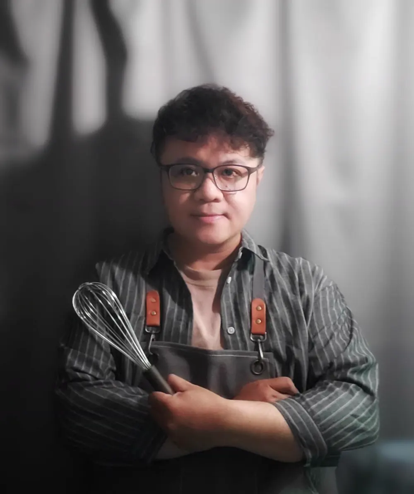
給正在換工作、換城市、換一種活法的人：舊的已經放下，新的還沒長出來。我是曾在半導體業十餘年的 Chester，現在在烤箱前，用一顆手作瑪德蓮，陪你在茫然的轉彎處先緩一緩。
一盒 6 入，單一口味全程低溫寄送表單送出後通知金額，48 小時內匯款完成訂單即成立
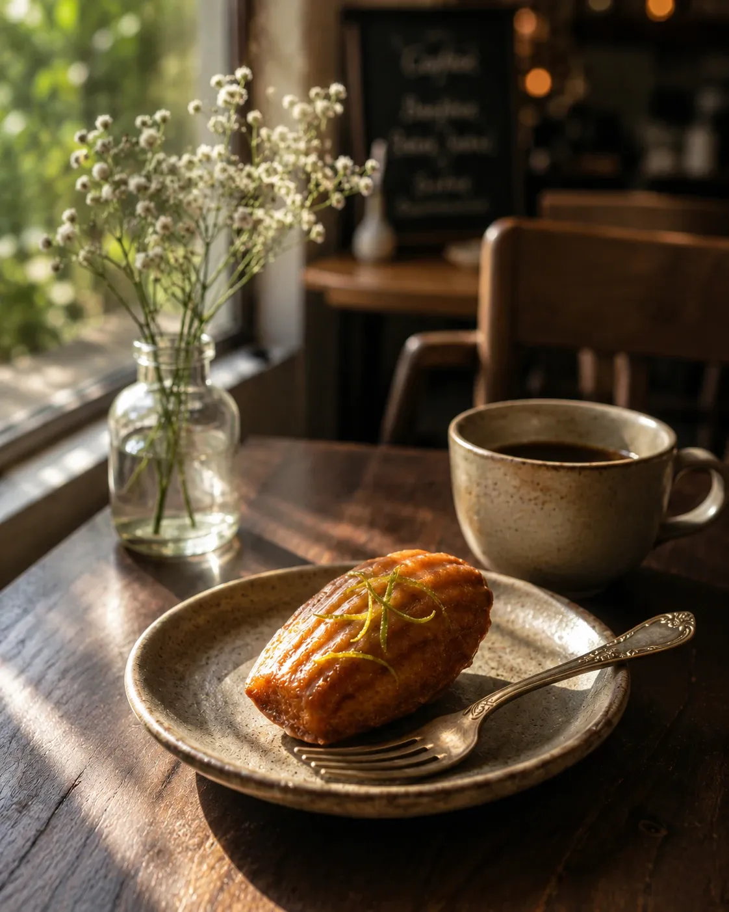
手作法式瑪德蓮多款融入台灣茶香單一口味六入低溫宅配
換了路，位置還在。
給正在換工作、換城市、換一種活法的人：舊的已經放下，新的還沒長出來。我是 Chester，現在在烤箱前，用一顆手作瑪德蓮，陪你在茫然的轉彎處先緩一緩。
A breath in between
舊的放下了，
新的還沒長出來。
這中間的空白，
是換一口氣的時間。
懸在中間的時候，
很多事都還沒定，
連「接下來要去哪」都說不準。
那就先定一件最小的事：
今天，要哪一款。
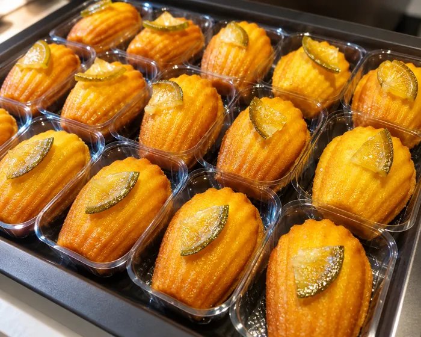
0118 款，每一款都有它對應的心情。這是這一段裡，可以先決定的一件小事。
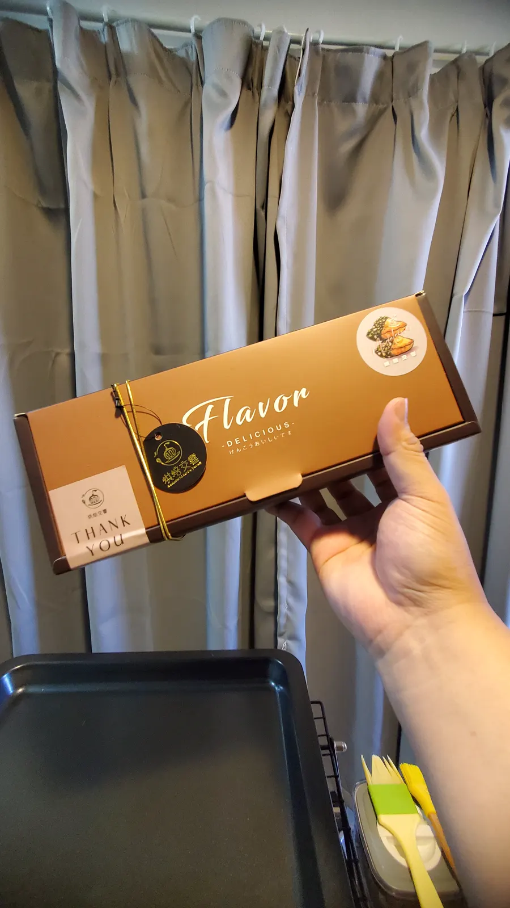
02每週固定 2 到 3 天為出貨日，一律低溫寄送。等待的這幾天，什麼都不用做。
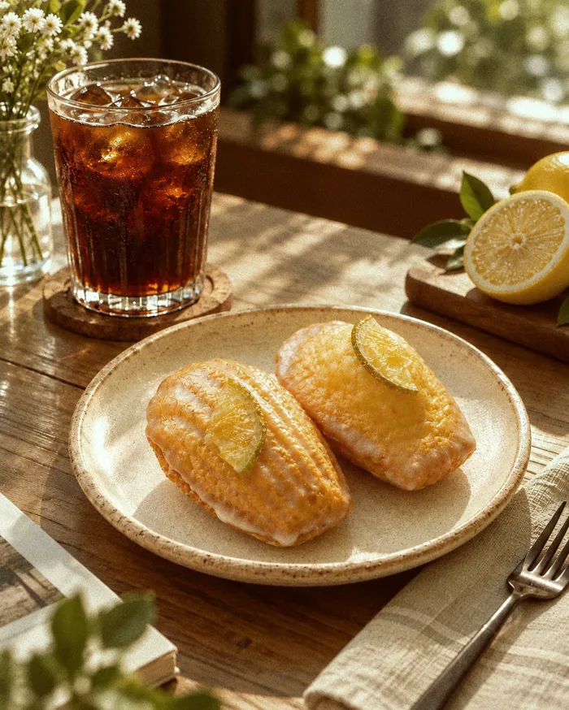
03再翻到那張卡片。每盒附一張隨機插圖明信片，上面有一句話，替這一段換一個看法。
The beginning
Chester，《烘焙交響》主理人
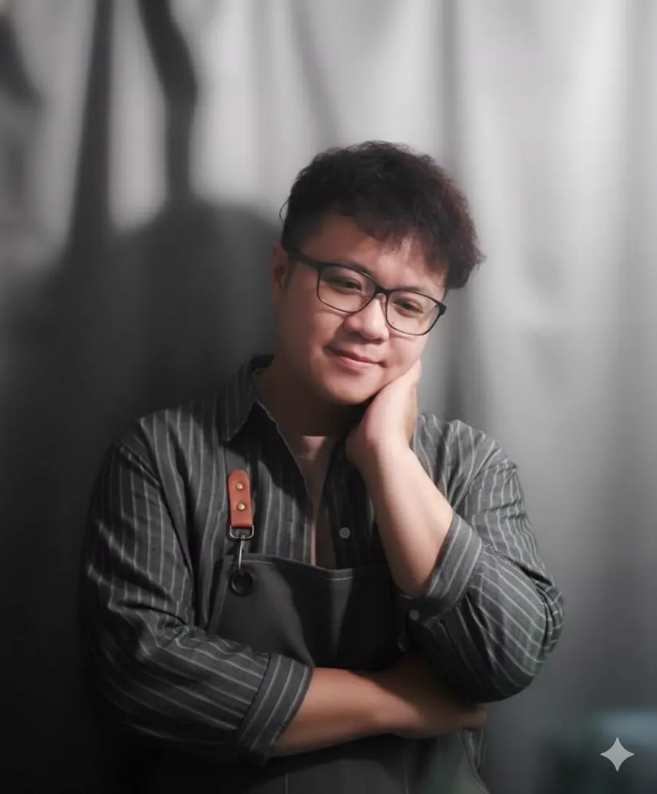
在半導體業的十幾年，
每一項製程參數，都不允許誤差。
某天看著名片上的頭銜，腦中突然閃過一個念頭問自己：
「這是我要的嗎？」
不是崩潰，也沒有委屈。
只是一種，像一根慢慢變小的燭火，小到快要熄滅的感覺。
離開的那天，沒有豪言壯語，
默默訂了外送餐點請大家吃飯。
隔沒多久，我就開始拾起了烘焙用的攪拌棒。
從監測晶圓的 recipe，到研發蛋糕的 recipe。
從鍵盤，到攪拌棒。
那個嚴謹、細心、在乎每一個細節的人，
或許沒有消失，只是換了一個舞台。
朋友問我：「這樣值得嗎？」
我說：「這是我親手為自己打造的光環，不是別人給的，也不是某個職稱短期借我的。」
所以我在這裡，替正在轉彎的人留了一個位置。
我希望《烘焙交響》能成為你生活裡的某一段音符，不是最燦爛的那個，而是在你疲憊、懷疑自我、覺得世界好像都跟你過不去的時候，能讓你慢慢坐下來聆聽的那段。
不用急著決定，先從 LINE 認識這裡就好。
生命像一首交響樂，有高潮，有靜止，有你以為彈錯的音階，後來才發現，那段才是整首曲子最有層次、最具爆發力的地方。
The madeleine
《烘焙交響》是 Chester 的個人工作室，每一單都按單備料，手作完成。
法式瑪德蓮，單顆約 40 克，多款融入台灣茶香，目前共 18 款。
相信轉折不是終點；
相信內在強大了，世界才會開始溫柔；
相信此刻停下來不是軟弱，是為了走得更遠的準備。
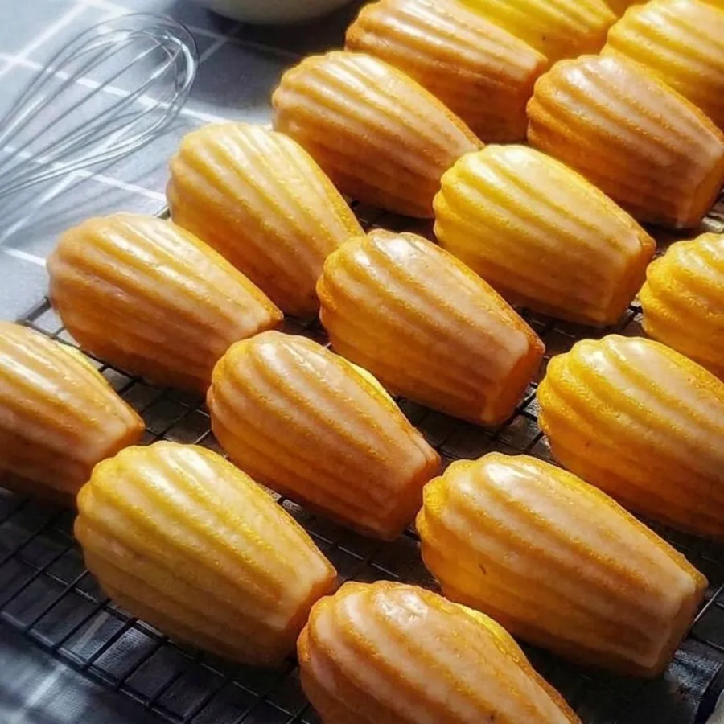
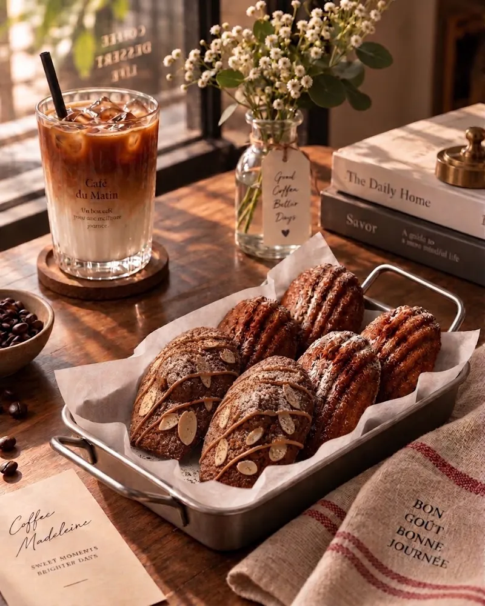
At a glance
Choose your mood
18 flavours, six moods.
Why this one
Chester 曾在半導體業工作十餘年。
離開之後，拾起攪拌棒，
把監測晶圓的細心，換成研發蛋糕的細心。
他知道懸在中間是什麼感覺，
所以這裡留了一個位置。
每盒附一張隨機插圖明信片，
上面一句話，替你換一個看這一段的角度。
拆開一顆，吃完，再翻到那一面。
全系列使用履歷雞蛋與國產鮮奶，
每一單按單備料，手作完成。
18 款裡，有用紅玉、金萱、鐵觀音、紅烏龍、炭焙烏龍、焙茶做成的台灣茶香。
一盒六顆，冷凍可以放 15 天，
六個留白時刻，可以悄悄排進接下來的日子。
打開禮盒的那一刻，我希望你感覺到的不只是蛋糕的香氣，而是有人輕輕說了一句：「你已經很努力了，可以讓自己慢下來一下。」
the third thing in the boxFor you
先坦白寫在這裡，下單前就知道。
Moments
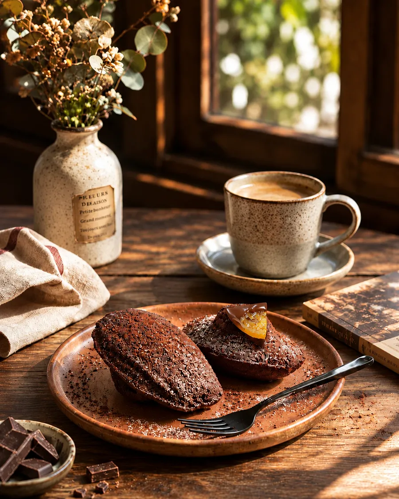
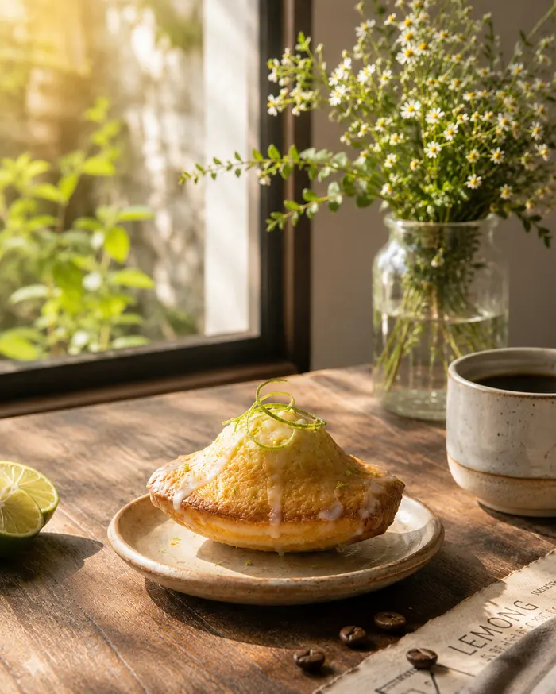
小提醒六顆不用一次吃完。常溫保存期限 5 日，冷藏 7 日，冷凍 15 日，可以分散在接下來的一兩週。
Questions
誰在做、怎麼訂、怎麼保存，
包含目前做不到的事，都先寫在這裡。
《烘焙交響》是 Chester 的個人工作室。我曾在半導體業工作十餘年，離開之後拾起攪拌棒，現在每一單按單備料，手作完成。全系列使用履歷雞蛋與國產鮮奶。
適合。懸在中間的感覺，不一定來自換工作，也可能是換城市、換階段，或是做了很久的事，突然不確定了。18 款口味沒有固定的對象，挑一款像你這陣子的就好。
填寫訂購表單送出後，我會通知實際金額與匯款資訊，請在 48 小時內完成匯款，訂單才會成立。逾時未付不會再次通知，訂單會由已匯款的訂單遞補。
一律匯款轉帳，匯款後請回傳帳號末 5 碼。因為是個人工作室，目前不開立發票。
每週有固定 2 到 3 天為出貨日，照訂單順序手作寄送。匯款完成後 2 天內，我會通知你出貨日期，最慢 2 星期內出貨完畢。恕不指定日期，有需要請提早半個月告知。收到出貨通知後 24 小時內可以提出異議，只能往後遞延。
一律低溫寄送，提供宅配與 7-11 到店取貨。運費 NT$180，單筆滿 NT$2,500 免運。
目前以一盒 6 入為購買單位，一盒固定單一口味，暫不提供混搭。
排入製作後無法取消，也無法退費，因為每一單都是按單備料手作。送出表單前，請先確認口味與數量。
最佳賞味期是密封常溫 3 日。保存期限是常溫 5 日、冷藏 7 日、冷凍 15 日。每顆都是獨立包裝，附底托。
有三種方式：烤箱 150 到 160°C 烤 3 到 5 分鐘；氣炸鍋 150°C 約 3 分鐘；或是不拆袋，自然回溫 45 到 60 分鐘。
全系列都含小麥、蛋、堅果（杏仁粉，麵糊基底）、乳製品。各款另有額外成分，例如芝麻、核桃、開心果、榛果、南瓜子等，訂購表單與盒身都會完整標示，下單前請先確認。
有 8 款的果乾或果丁在前置作業時，會用蘭姆酒、君度橙酒或白蘭地浸泡，成品會略含酒香，酒只用在果乾與果丁，不在蛋糕本體。
這 8 款是：伯爵蔓越莓、玫瑰蔓越莓、焙茶酥粒桂圓、黑糖藍莓乳酪、橙香可可、柚香金萱、紅玉橙香、桂花白桃烏龍。需要避開酒精的人，請選其他口味，或下單前先問我。
每盒附一張隨機插圖明信片（圖案隨機，上面有一句話）、一張感謝小卡、一張名片。盒外有品牌貼紙裝飾，不另外用包裝紙包裝，也不提供代寫卡片。兩盒以上，每兩盒附一個印有品牌 logo 的提袋。
可以先看上面的口味選擇器，從「結束和開始之間」那一組開始挑。還是不確定的話，法式原味是一個安靜的起點。也可以先加入官方 LINE，慢慢認識。
加入後先收到一則歡迎訊息，之後每月約三則，隨時可以離開。
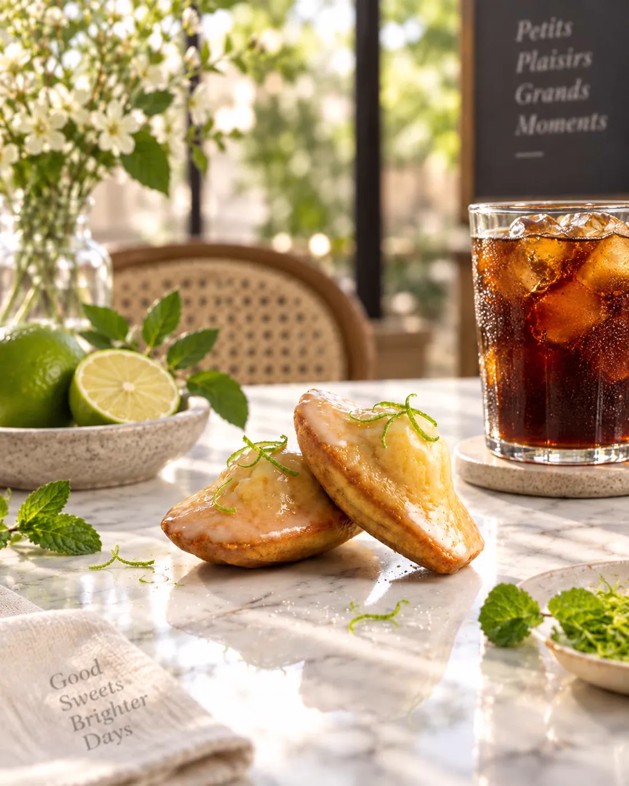
Whenever you're ready
陪伴一直在撐著的人，用一塊瑪德蓮的時間，找回一個屬於自己的當下。
一盒 6 入，單一口味｜全程低溫寄送，運費 NT$180，滿 NT$2,500 免運｜每週固定 2 到 3 天出貨日
慢慢來，位置還在。take your time.